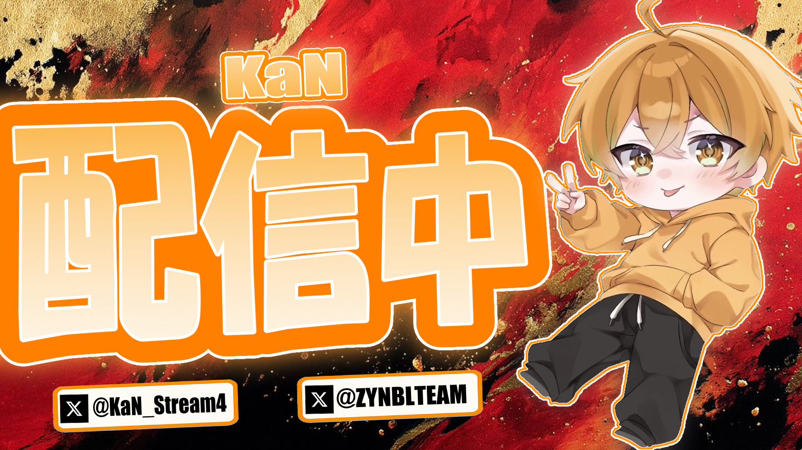
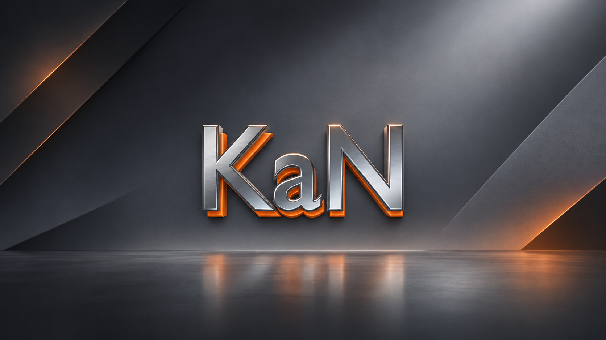
プロフィール
KaNについて
Web Design / Visual Design / Community Setup
Esportsから個人まで。
チームの個性が伝わるWeb制作。個人活動者様のWeb制作。
サムネイルや映像素材、Discordサーバーの制作にも対応します。
細部まで、丁寧に。
-
聞く
ページ指定や雰囲気指定などを伺います。
-
組む
必要なものを整理し、骨格から細部へ形にします。
-
納品
何度か検証を重ね、納品します。
ポートフォリオをご覧いただきありがとうございます。
現在19歳の大学1年生です。デザインや映像制作などのクリエイティブな活動に取り組みながら、大学ではプログラミングや情報技術について学んでいます。
主にYouTubeのサムネイル、ポスター、SNS向けのグラフィックデザインなどを制作しています。また、過去にYouTubeで活動していた経験を活かし、Shortsを中心とした動画編集にも対応しています。
そのほか、Discordサーバーの構築・設定なども行っています。※現在特別な時を除きBotの作成はしておりません。
一つひとつの制作に丁寧に取り組んでいますので、ご依頼やご相談などございましたら、お気軽にお問い合わせください。
SKILLS
- Programming
- HTML、CSS、JavaScript、Python、C、C++（勉強中）、Java（今後勉強予定）
- Thumbnail / Video Editing
- CLIP STUDIO、Filmora13、Photoshop（練習中）、Premiere Pro（練習中）
- Discord
- コミュニティサーバー構築、Bot導入※現在Botの制作は行っておりません。（特別な場合を除く）
サムネイル制作実績
サムネイル
配信・動画の入口となる一枚。視認性を意識し作成します。
ライブ配信サムネイル
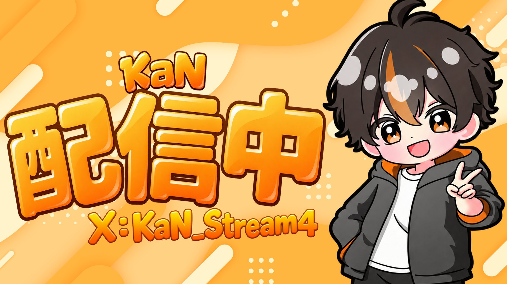
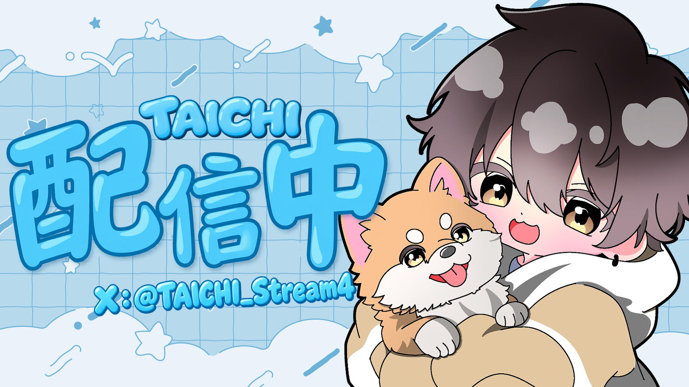
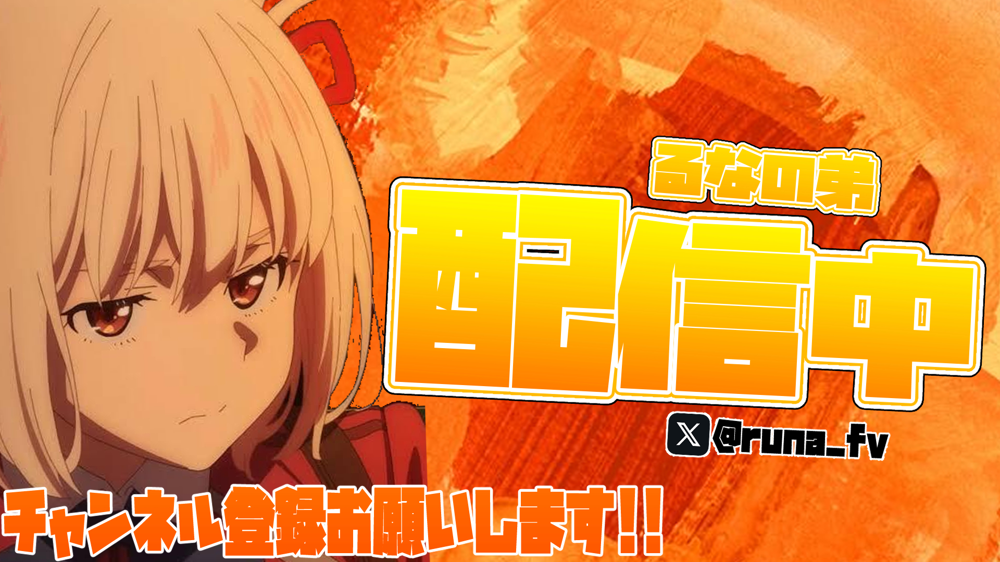
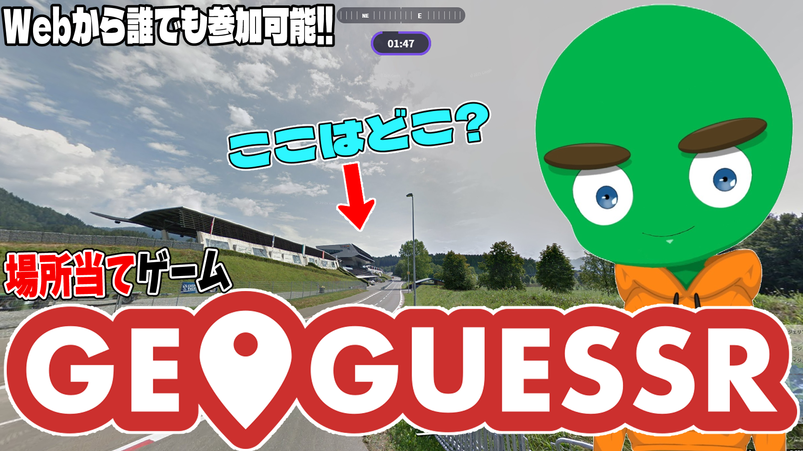
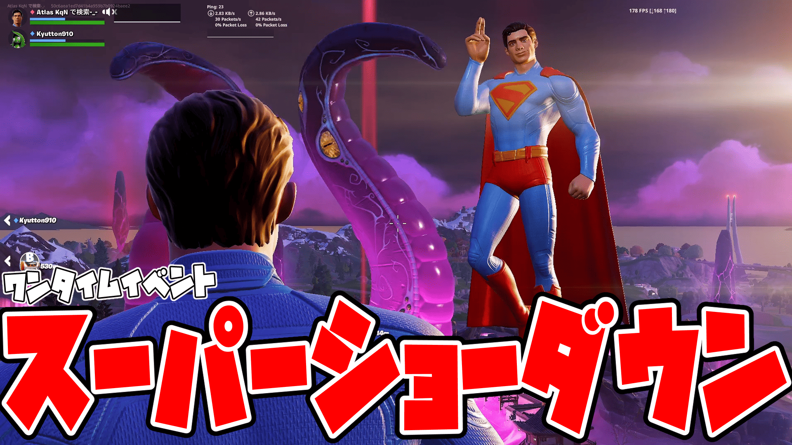
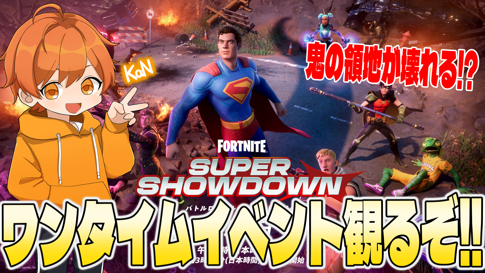
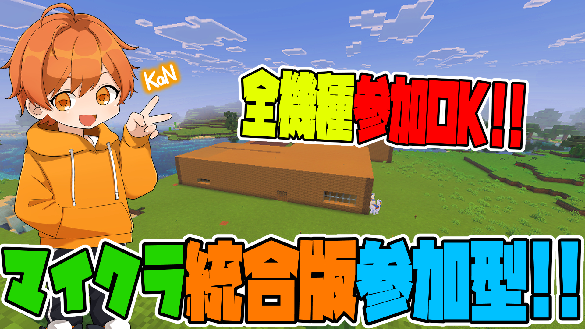
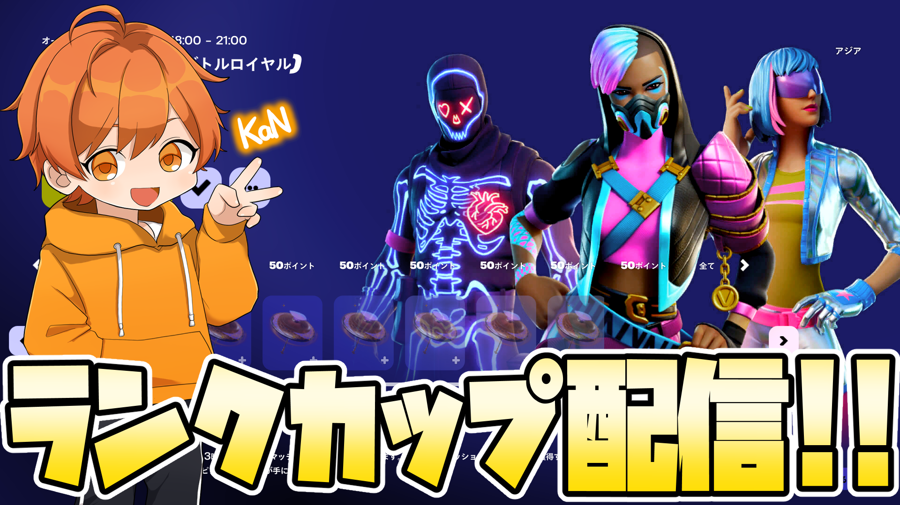
動画サムネイル
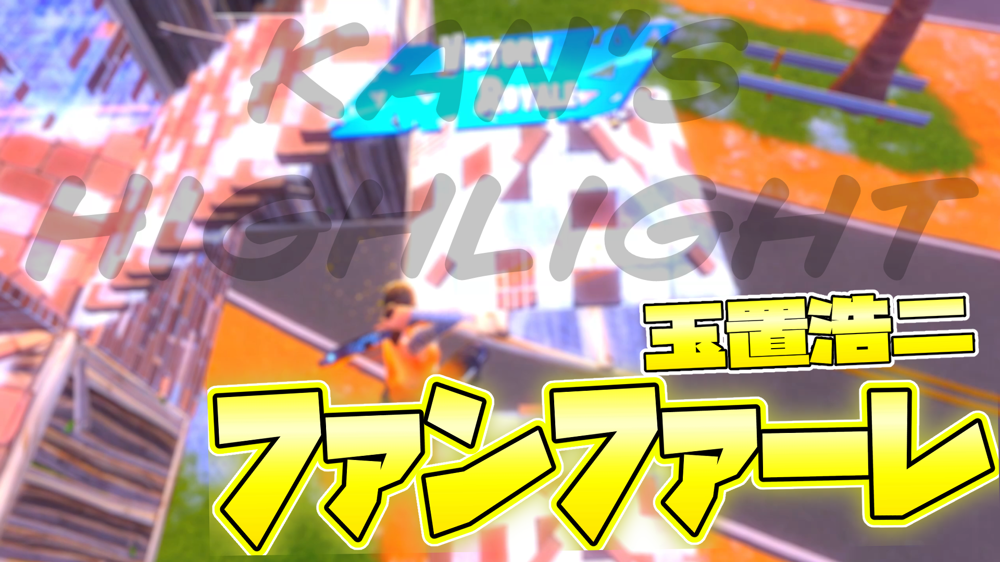
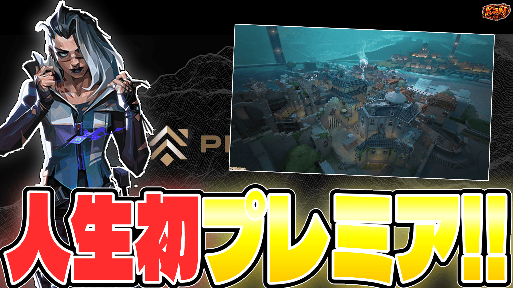
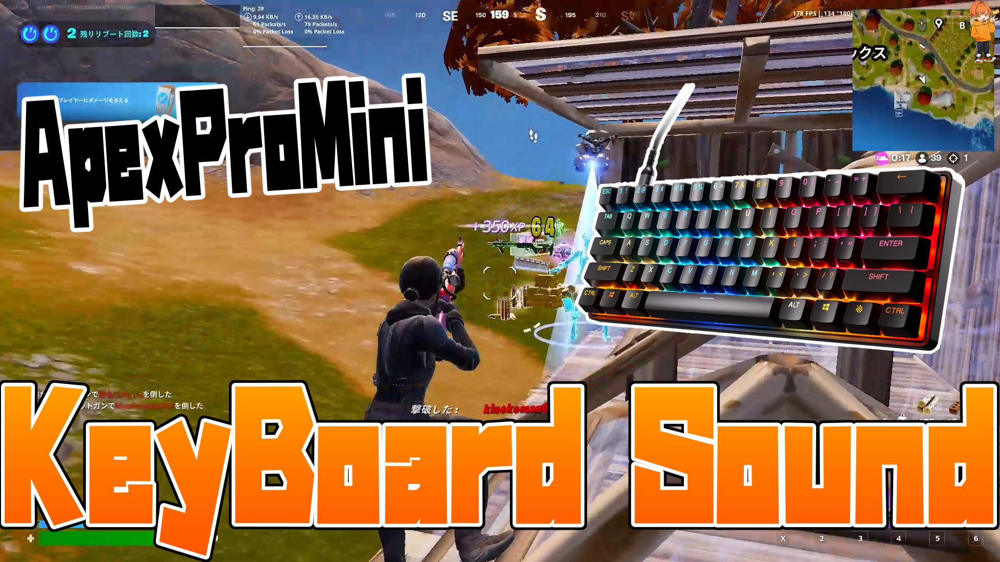
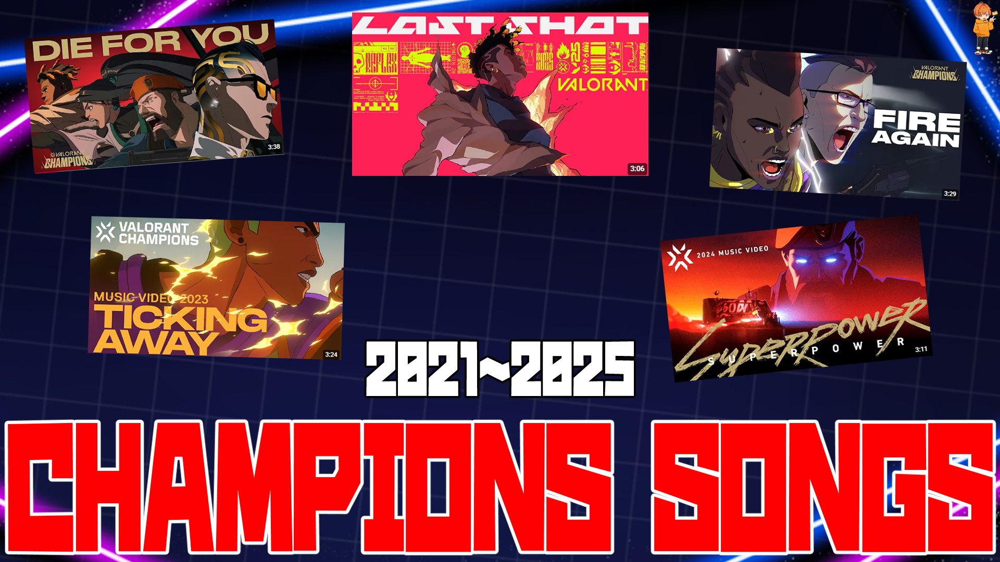
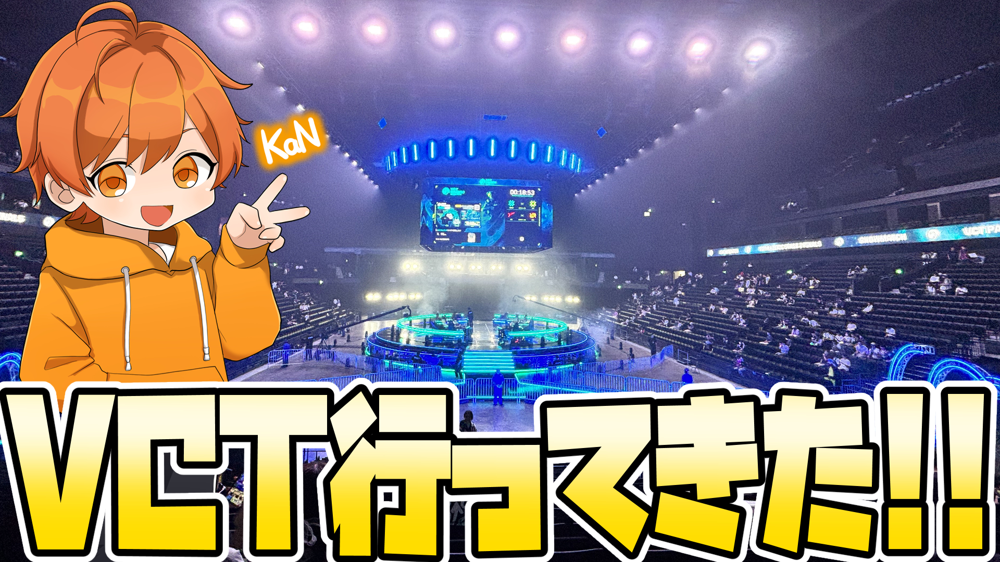
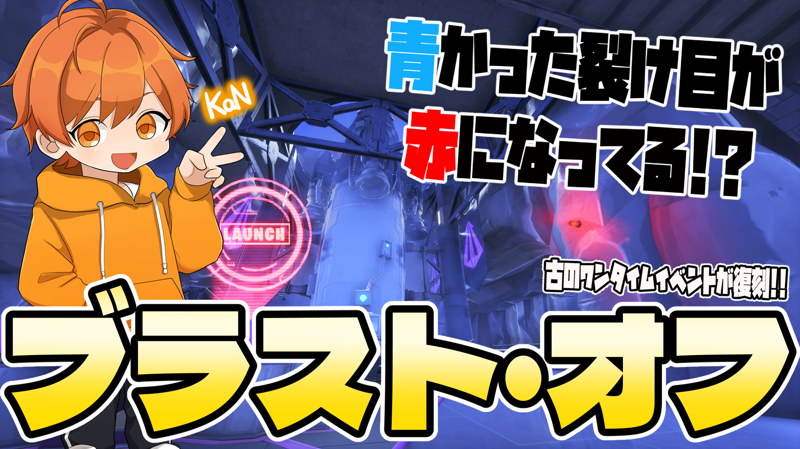
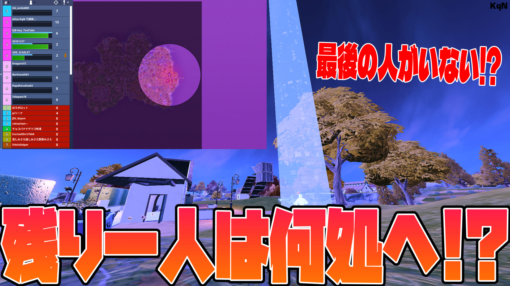
その他の制作実績
映像・コミュニティ・配信デザイン
ジャンルを横断した制作物です。
オープニング・エンディング
配信や動画の世界観に合わせて制作した映像作品です。
ひろぽっぽ様エンディング
れらっぴ様エンディング
れらっぴ様オープニング
KaNエンディング
チームオーバーレイ
チームの世界観に合わせて制作した配信用オーバーレイです。
制作のご相談・料金確認・ご依頼
ご依頼について
ご相談から料金シミュレーション、正式な制作依頼まで、専用のご依頼サイトでまとめて受け付けています。
内容が決まっていなくても、まずはご相談ください。
ご依頼サイトでは、制作内容の確認、概算料金のシミュレーション、相談・依頼の送信を一つの流れで行えます。
-
制作内容を選ぶ
希望するサービスと必要な内容を選択します。
-
概算料金を確認する
選択内容に応じた目安の料金を確認できます。
-
相談・依頼を送る
未確定の内容を含めて、そのままご相談いただけます。
制作内容
- Web Siteチーム・イベント・個人サイト
- Thumbnail動画・配信用サムネイル
- Opening / Ending動画・配信でのオープニング＆エンディング
- Discord Serverコミュニティサーバー、イベントサーバー
料金プラン
- Team / Event Site
- 受付停止中
- Thumbnail
- ¥2,000〜
- Opening / Ending
- ¥7,500
- Discord Server
- ¥3,000〜¥8,000
ご相談・お問い合わせはこちら
以下のボタンからご依頼サイトが新しいタブで開きます。